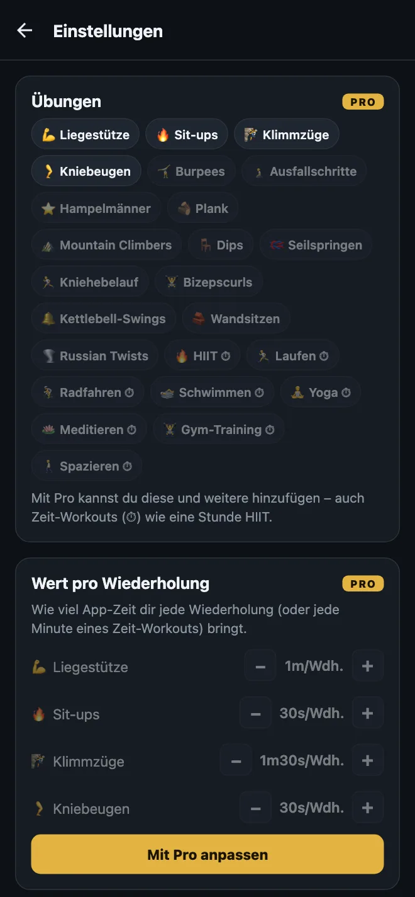
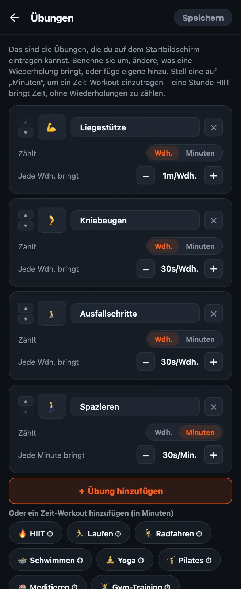

So passt du deine Übungen in HonorFit an
Hallo zusammen! HonorFit war anfangs mein ganz persönlicher Liegestütz-App-Blocker: Instagram bleibt gesperrt, bis ich ein paar Liegestütze gemacht habe, und die trage ich selbst ein, nach dem Ehrensystem. Kein Konto, keine Kamera. Ab Werk gibt es vier Übungen: Liegestütze, Sit-ups, Klimmzüge und Kniebeugen.
Aber nicht jeder will Liegestütze machen. Vielleicht hassen deine Handgelenke sie, vielleicht machst du lieber Burpees, oder du bist heute schon 8 Kilometer gelaufen und willst, dass das zählt. Verständlich! Deshalb kannst du alles ändern. Hier steht genau, wie das geht, und was kostenlos ist und was Pro braucht.
Was kostenlos ist und was Pro ist
Ich sag’s gleich ehrlich: Übungen ändern ist eine Pro-Funktion. Die kostenlose Version hat die vier Standardübungen mit diesen Werten:
| Übung | Jede Wdh. bringt (Standard) |
|---|---|
| 💪 Liegestütze | 1 Minute |
| 🔥 Sit-ups | 30 Sekunden |
| 🧗 Klimmzüge | 1 Minute 30 Sekunden |
| 🦵 Kniebeugen | 30 Sekunden |
In der kostenlosen Version geht jedes Rad bis 20 Wiederholungen pro Satz, und du kannst bis zu 20 Minuten auf einmal ansparen. Sperren, Eintragen und Statistiken sind für immer kostenlos.
Pro kostet 3 $ im Monat oder einmalig 19,99 $. Das ist der US-Preis; je nach Land und Währung ist er anders, und der Store zeigt dir deinen. Mit Pro kannst du Übungen hinzufügen, umbenennen und entfernen, ändern, was jede Wiederholung bringt, und Zeit-Workouts in Minuten eintragen. Die Räder gehen dann bis 100 pro Satz, und das 20-Minuten-Limit fällt weg. In Pro steckt noch mehr, aber in diesem Beitrag geht es nur um Übungen.

1. Den Übungseditor öffnen
- Tippe auf dem Startbildschirm oben rechts auf das Zahnrad, um die Einstellungen zu öffnen.
- Tippe ganz oben auf die Karte Übungen.
Du siehst eine Karte pro Übung. Nichts, was du hier machst, gilt, bevor du oben rechts auf Speichern tippst. Probier also ruhig alles aus. Wenn du ohne Speichern zurückgehst, ändert sich nichts.

2. Eine Übung umbenennen oder ihr Emoji ändern
Tippe auf den Namen und schreib, was du willst. Aus „Liegestütze“ können „Knie-Liegestütze“ oder „Wand-Liegestütze“ werden, wenn du die eigentlich machst. Um das Symbol zu ändern, tippe links auf das Emoji-Quadrat und such dir eins aus dem Raster aus (da sind ungefähr 40 mehr oder weniger sportliche).
Kleiner Hinweis: Die Namen der Standardübungen folgen der App-Sprache. „Kniebeugen“ erscheinen also als „Squats“, wenn dein Handy auf Englisch eingestellt ist. Sobald du eine umbenennst, steht da genau das, was du eingetippt hast.
3. Festlegen, wie viel Bildschirmzeit jede Wiederholung bringt
Unter jeder Übung steht Jede Wdh. bringt mit einem −- und einem +-Button. Jeder Tipp ändert den Wert um 5 Sekunden, und weniger als 5 Sekunden geht nicht. Du kannst Burpees also 1m30s wert machen und Hampelmänner 10s, ganz wie es sich für dich fair anfühlt.
Du kannst auch nur die Werte ändern, ohne den Editor zu öffnen: In den Einstellungen gibt es direkt unter der Karte Übungen den Bereich Wert pro Wiederholung mit denselben −/+-Buttons.
4. Eine Übung hinzufügen
Zwei Wege:
- Tippe auf „＋ Übung hinzufügen“. Du bekommst eine neue Karte namens „Neue Übung“, die 30 Sekunden pro Wiederholung bringt. Benenne sie um und stell den Wert ein.
- Tippe auf einen Vorschlag. Unter dem Button gibt es eine Reihe gängiger Übungen, die du mit einem Tipp hinzufügst: Burpees, Ausfallschritte, Hampelmänner, Plank, Mountain Climbers, Dips, Seilspringen, Kniehebelauf, Bizepscurls, Kettlebell-Swings, Wandsitzen und Russian Twists. Auch die starten bei 30 Sekunden pro Wiederholung. Sobald du eine hinzugefügt hast, verschwindet sie aus den Vorschlägen.
Jede Übung bekommt ihr eigenes Rad auf dem Startbildschirm, also würde ich bei etwa vier bleiben. Mehr, und du scrollst, bis du die richtige findest.
5. Zeit-Workouts eintragen (Minuten statt Wiederholungen)
Danach werde ich am häufigsten gefragt. Manche Bewegung lässt sich einfach nicht in Wiederholungen zählen: ein Spaziergang, eine Yogastunde, eine Runde Joggen, eine Stunde im Gym. Jede Karte hat einen Schalter Zählt: Wdh. | Minuten. Stell ihn auf Minuten, dann zählt das Rad Minuten, und aus dem Wert wird Jede Minute bringt.
Es gibt auch Zeit-Vorschläge zum Antippen (die mit dem ⏱): HIIT, Laufen, Radfahren, Schwimmen, Yoga, Meditieren, Gym-Training und Spazieren.
Neue Zeit-Workouts starten bei 30 Sekunden pro Minute, eine Stunde HIIT bringt also 30 Minuten App-Zeit. Achtung: Wenn du eine Übung zwischen Wdh. und Minuten umschaltest, springt ihr Wert auf 30 Sekunden zurück, denn „1 Minute pro Wiederholung“ und „1 Minute pro Minute“ sind ziemlich unterschiedliche Deals. Stell ihn nach dem Umschalten einfach neu ein.
Das Rad zählt ganze Minuten, eine 30-Sekunden-Plank passt also nicht wirklich zu Minuten. Bei Halteübungen wie dieser würde ich bei Wdh. bleiben und selbst festlegen, was eine Wiederholung für dich ist (zum Beispiel einmal 20 Sekunden halten).
6. Eine Übung entfernen oder von vorn anfangen
- Tippe auf das ✕ auf einer Karte, um die Übung zu entfernen. Mindestens eine musst du immer behalten.
- Standard wiederherstellen ganz unten holt die ursprünglichen vier Übungen mit ihren ursprünglichen Werten zurück. Wie alles andere hier gilt das erst, wenn du auf Speichern tippst.
Wie ich die Werte wählen würde
Der Wert ist der Preis für deine Apps. Das Ziel ist also ein Preis, den du wirklich zahlst, statt zu schummeln. Ein paar Anhaltspunkte:
- Härtere Übungen bringen mehr. Klimmzüge und Burpees 1m30s, Liegestütze 1m, Kniebeugen und Ausfallschritte 30s.
- Zeit-Workouts etwa zum halben Preis. 30 Sekunden pro Minute heißt: 20 Minuten Spazieren bringen dir 10 Minuten Scrollen. Wenn Spazierengehen die Gewohnheit ist, die du am meisten willst, setz es auf 1 Minute pro Minute hoch.
- Wenn du merkst, dass du bei der Zahl schummelst, senk den Preis. Das ist meine Regel beim Ehrensystem. Wiederholungen eintragen, die du nicht gemacht hast, heißt: Der Preis stimmt nicht. Nicht, dass du schlecht darin bist.
- Der Hart-Modus (Pro) halbiert alle Werte mit einem einzigen Button oben auf dem Startbildschirm, falls du einen härteren Tag willst, ohne alles umzustellen.
Wenn du Ideen für bestimmte Setups willst, habe ich zwei weitere Beiträge geschrieben: Kegel-Übungen und Beckenheben als Übungen zum Entsperren und sanfte Übungen, falls Liegestütze nicht dein Ding sind.
HonorFit Blocker ist ein kostenloser App-Blocker für iPhone und Android. Kein Konto, keine Kamera, nichts verlässt dein Handy. Du trägst deine Wiederholungen nach dem Ehrensystem selbst ein. Eigene Übungen gibt es mit Pro. Das ist nicht für jeden etwas, aber vielleicht gefällt es ja dem einen oder der anderen von euch!